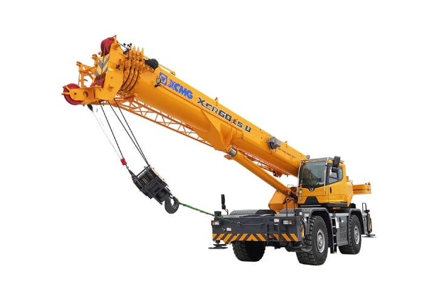
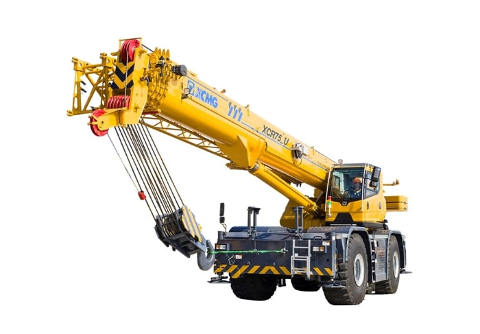
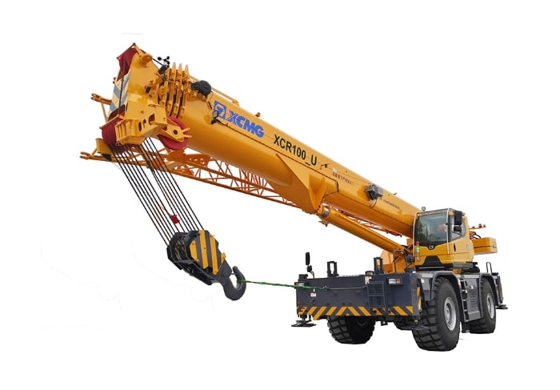
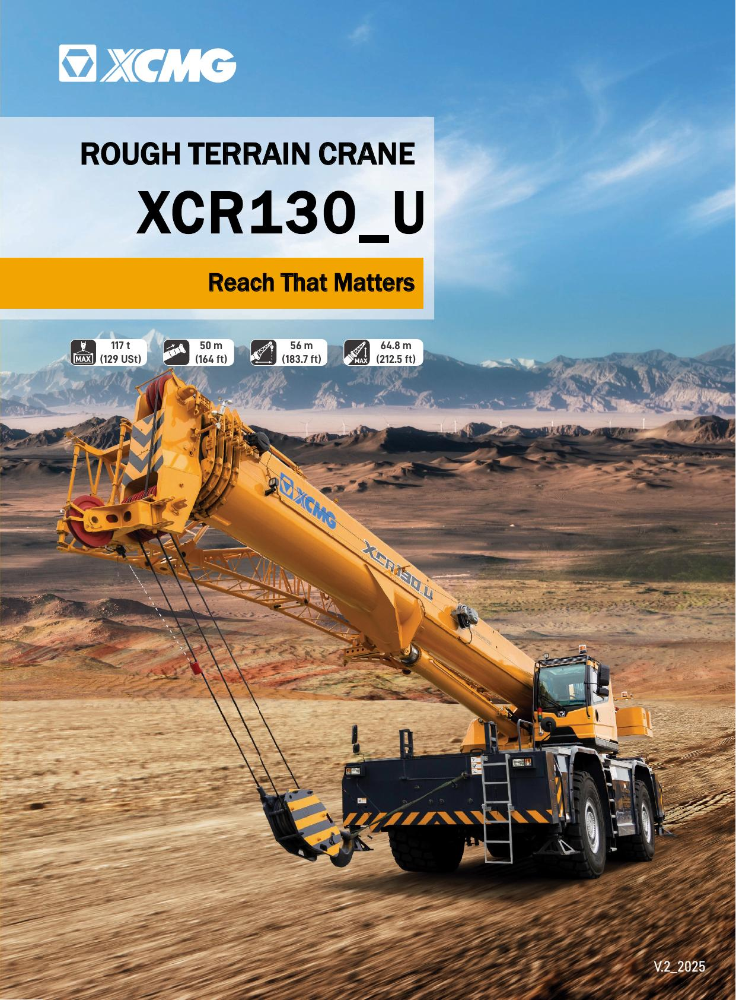

道路转场 / 运输合规
判断整机在州际道路转场、拆装配重和轴荷管理中的适配性。重点核对运输重量、宽高尺寸、配重组合以及最大配重状态下的行驶能力。


9 个对标产品 · 参数覆盖 98%
可形成参数对标
8 个对标产品 · 参数覆盖 95%
可形成参数对标
9 个对标产品 · 参数覆盖 98%
可形成参数对标
7 个对标产品 · 参数覆盖 100%
可形成参数对标8 个对标产品 · 参数覆盖 0%
数据范围待补齐
7 个对标产品 · 参数覆盖 66%
数据范围待补齐判断整机在州际道路转场、拆装配重和轴荷管理中的适配性。重点核对运输重量、宽高尺寸、配重组合以及最大配重状态下的行驶能力。
判断设备从道路进入未铺装场地后的通过性与转向灵活性。行驶速度、转弯半径、转向模式、驱动桥和接近/离去角共同影响现场调位效率。
聚焦主臂中近幅度吊装能力与单循环效率，结合无专用附件最大起重量、典型幅度载荷、主卷扬拉力和臂架动作时间判断。
聚焦高空安装、远幅度吊装和副臂覆盖能力。主臂全伸长度、副臂组合、最大幅度载荷及伸臂效率决定可覆盖的任务边界。
判断不平地面支腿展开、非对称支撑和轮胎/带载工况下的稳定能力。支腿跨度、支腿档位、倾斜载荷表与轮胎载荷数据需要结合审核。
判断连续吊装、低温环境和附件扩展条件下的持续作业能力。动力储备、燃油容量、主副卷扬、回转速度及低温/润滑配置共同影响停机时间。
各吨级内部按指标方向归一化；运输 10%、底盘机动 12%、主副臂 18%、支腿 12%、动力 8%、卷扬 10%、起重性能 25%、速度 5%。
明确的无配置、选配、标配按 0、60、100 计入；空白保留为资料未记录。配置有效覆盖率不足 60% 时不发布综合分；空白的六大特性区域不转化为实机评价。